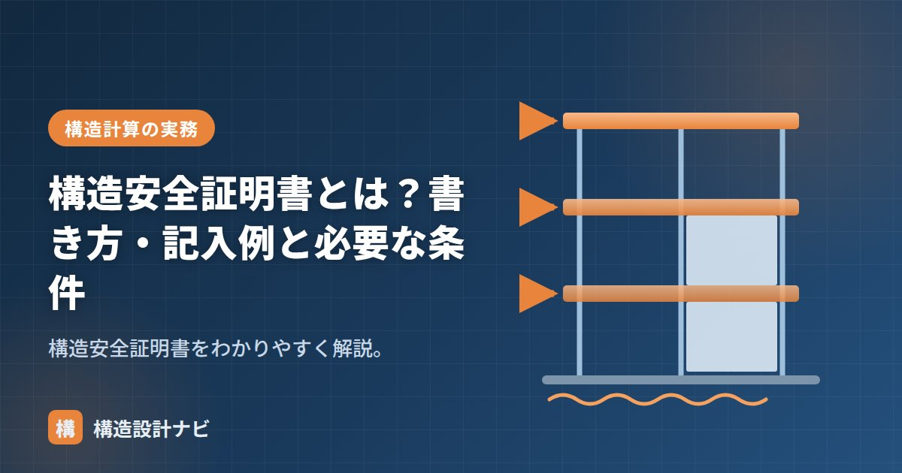

構造安全証明書とは？書き方・記入例と必要な条件

構造安全証明書とは、構造計算によって建築物の安全性を確かめたことを示す証明書のことです。建築士法に基づき、構造計算を行った建築士が、設計の委託者（建築主）に交付する義務を負います。分厚い構造計算書そのものではなく、その計算結果に対して「誰が」「どの基準で」安全性を確認したのかを、建築主にもわかりやすく示すための書面という位置づけです。確認申請や建築主への説明責任を果たすうえで欠かせない手続きであり、構造設計者にとっては実施設計の総仕上げともいえる書類です。
- 構造安全証明書は、構造計算をした建築士が委託者に交付する法定の証明書
- 一定規模以上の建築物で交付が必要。大規模建築物では構造設計一級建築士の関与が必須
- 記載項目・様式・交付のタイミングを誤ると確認申請の手戻りにつながる
意味と根拠
建築士法では、構造計算によって安全性を確かめた建築士は、その旨を証する書面（構造安全証明書）を委託者に交付することとされています。構造計算に対する建築士の責任の所在を明確にし、建築主が安心して建築物を利用できるようにするための制度です。過去に構造計算書の偽造が社会問題となったことを背景に、建築士の関与と責任を書面で明示する仕組みが整えられた経緯があります。証明書は構造計算書の要旨をまとめたものであり、専門知識のない建築主でも安全性確認の内容を確認できるようにする役割も持ちます。
必要な建築物の条件
建築基準法令で構造計算が必要とされる建築物（一定規模以上の建築物など）について交付が必要です。小規模で構造計算を要しない建築物は対象外です。大規模建築物では構造計算に加え、構造設計一級建築士の関与（法適合確認）が求められる場合があります。木造・鉄骨造・RC造など構造種別を問わず、対象規模の建築物であれば同様に交付義務が生じます。増改築の場合でも、構造計算をやり直した部分があれば同様に証明書の交付対象となる点に注意が必要です。
書き方・記入例（主な記載項目）
- 建築物の名称・所在地・用途・規模（階数・延べ面積・高さ）
- 採用した構造計算の方法（計算ルートなど）と適合する基準
- 証明する建築士の氏名・資格の種類・登録番号・事務所名・押印（署名）
- 交付の年月日、委託者の氏名
様式は国土交通省・建築士事務所協会などが示すひな形を用いるのが確実です。記載内容が構造計算書・設計図書と整合していることが重要です。
| 項目 | 構造計算書 | 構造安全証明書 |
|---|---|---|
| 内容 | 応力計算・断面算定などの詳細な計算過程 | 計算結果の要旨と建築士による証明 |
| 分量 | 数十〜数百ページ | A4用紙1〜数枚程度 |
| 主な用途 | 確認申請・審査機関への提出 | 建築主への交付・保存 |
証明書の記載内容が構造計算書・設計図書の内容と食い違っていると、確認申請の審査で指摘を受けたり、後日のトラブルの原因になったりします。計算ルート・使用材料・建築物概要などは必ず整合させましょう。
交付のタイミングと実務上の注意点
構造安全証明書は、原則として実施設計が完了し、構造計算がすべて確定した段階で作成・交付します。確認申請の直前に慌てて作成すると、構造計算書や図面との不整合が生じやすいため、実施設計の進行に合わせて計画的に準備することが大切です。交付後は建築主・設計事務所の双方で写しを保管し、増改築や用途変更の際に参照できるようにしておきます。押印・署名は必ず証明する建築士本人が行い、他者による代筆は認められません。
よくある質問
Q1. 構造安全証明書がないと確認申請はできませんか？
構造計算が必要な規模の建築物では、証明書（またはこれに相当する書面）の添付・提示が求められるのが一般的です。詳細な取り扱いは審査機関・特定行政庁によって異なるため、事前に確認しておくと安心です。
Q2. 構造設計一級建築士とは何が違いますか？
構造安全証明書は「証明書という書面」そのものを指し、構造設計一級建築士は「大規模建築物の構造設計に関与できる資格」を持つ建築士を指します。大規模建築物では、構造設計一級建築士自身が証明書を交付するか、法適合確認を行った旨を明記する必要があります。
「許容応力度計算（計算ルート）」「実施設計」「4号特例の廃止」をどうぞ。
審査対応をしていると、証明書に書いた計算ルートの記載と計算書の実際の内容が微妙にずれていて指摘を受ける場面によく出会います。実施設計の終盤で急いで書類を作ると起きやすいミスなので、私は計算が確定した直後に証明書のドラフトを作るようにしています。
まとめ
- 構造安全証明書は、構造計算をした建築士が委託者に交付する証明書（建築士法）。
- 構造計算が必要な建築物が対象。大規模では構造設計一級建築士が関与。
- 建築物概要・計算方法・建築士情報・年月日を記載。様式はひな形を使う。
- 実施設計完了後、構造計算書・図面との整合を確認したうえで交付するのが基本。